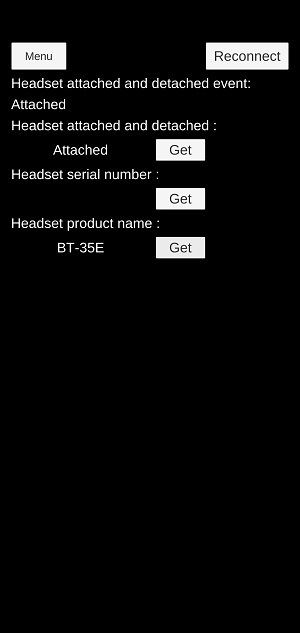

You can manage the temperature status and system status of various devices installed in Moverio.
| Function | Contents |
|---|---|
| Headset system status notification | Headset connect/disconnect notification |
| Get headset serial number | |
| Product name acquisition | Acquisition of headset product name |
| Reconnect | Reconnecting Moverio |
The above function is implemented by DeviceControl in the sample scene

| Label | Function |
|---|---|
| Headset attached and detached | Headset system status notification |
| Headset serial number | Get headset serial number |
| Headset product name | Product name acquisition |
| Reconnect | Reconnect |
For details of the function, refer to Moverio Basic Function SDK Developer’s Guide